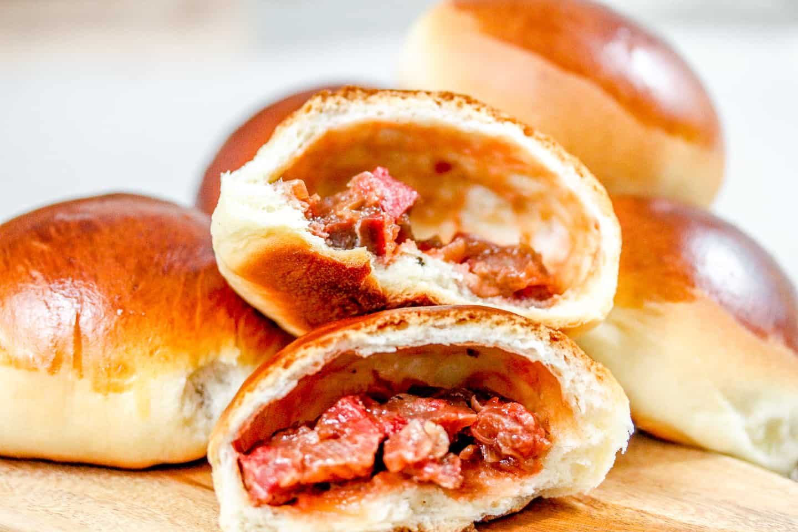

BBQ Pork Bun

Description
Baked char siu bao (also sometimes spelled cha siu bao), or Chinese BBQ Pork Buns, consist of soft milk bread and a savory filling of Chinese BBQ Pork.
They're a favorite among kids and adults alike, and also happen to be one Chinese bakery bun that we really prefer homemade!
Ingredients (for 16 servings)
For the Dough:
- 2/3 cup heavy cream
- 1 cup milk
- 1 large egg
- 1/3 cup sugar
- 1/2 cup cake flour
- 3 1/2 cups bread flour
- 1 tablespoon active dry yeast
<1i>1 1/2 teaspoons salt
For the Filling:
- 2 tablespoons vegetable oil
- 1/2 cup shallots
- 2 tablespoons granulated sugar
- 2 teaspoons light soy sauce
- 2 tablespoons oyster sauce
- 1 1/2 teaspoons sesame oil
- 2 teaspoons dark soy sauce
- 3/4 cup chicken stock
- 2 tablespoons all purpose flour
- 2 cups Chinese roast pork
To Finish the Buns:
- Egg wash
- 1 tablespoon sesame seeds
- 1 tablespoon granulated sugar
Steps
- In the bowl of a stand mixer fitted with the dough hook attachment, add the dough ingredients in the following order. Start with the room temperature heavy cream, milk, and egg. Then add the sugar, cake flour, bread flour, yeast, and salt, in that order.
- Turn the mixer on to the lowest setting to bring the dough together. When a scraggly dough has formed, knead on low speed for 15 minutes. If needed, turn off the mixer to bring the dough together with a rubber spatula. Alternatively, you can stir all the dough ingredients together with a wooden spoon in a large mixing bowl, and then knead by hand for 20 minutes.
- The dough should stick to the bottom of the bowl, but should not stick to the sides. If you’re in a humid climate, and the dough is sticking to the sides of the mixing bowl, add more flour 1 tablespoon at a time until it comes together.
- Shape the dough into a ball, and cover with an overturned plate or damp towel. Place in a warm spot to proof for 75-90 minutes, or until the dough doubles in size. (A good proofing environment is a closed microwave, with a mug of hot boiled water next to the bowl.)
- While that’s happening, make the meat filling. Be sure to dice the pork finely rather than in large chunks, so the buns are easier to fill. Heat 2 tablespoons oil in a wok over medium heat. Add the shallot/onion and stir-fry for 2 minutes. Add the sugar, soy sauce, oyster sauce, sesame oil, and dark soy. Stir and cook until it begins to bubble. Add the chicken stock and flour. Reduce the heat to medium low and cook, stirring, for 2-3 minutes, until thickened. Stir in the roast pork.
- Turn off the heat, and remove the filling from the wok onto a large plate. Separate the filling into 16 roughly equal piles, to ensure you get an even amount in each bun. Set aside to cool.
- After the first proof, knead the dough for another 5 minutes to punch the air out. Dump it onto a lightly floured surface, and shape it into a ball.
- Cut it into 16 equal pieces (in half, then quarters, then in quarters again). The best way to ensure you get evenly sized buns is to weigh the entire dough ball, divide the weight by 16, and then weigh out each individual piece to match that weight.
- To shape the buns, knead each individual dough ball to punch out any air bubbles and smooth it out. Roll it into a 4-inch circle, with the center slightly thicker than the outer edges.
- While assembling the buns, be sure to keep your hands clean. Any grease from the filling on your fingers will make it very difficult to seal them.
- Add 1 portion of filling to the bun, and crimp it closed, making sure it’s tightly sealed. Lay them seam side down on baking sheets lined with parchment paper, about 3 inches apart.
- Cover with a clean towel and allow to rise at room temperature for another hour.
- Arrange two racks in the top and bottom thirds of the oven, and preheat to 400°F/200°C. Brush the buns with egg wash, and sprinkle them with sesame seeds, if using.
- Transfer the buns to the oven, and immediately turn down the temperature to 350°F/175°C. Bake for 22-25 minutes, or until golden brown.
- Remove from the oven and immediately brush the buns with the sugar syrup while they’re still hot. Cool, and enjoy!
Return to Index